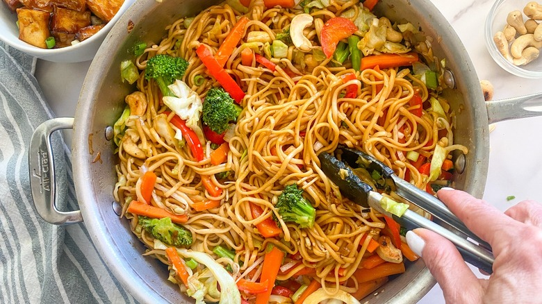

Chow mein

Description
We love quick, easy and customisable recipes around here! So here we have another satisfying and filling dish that can be customised for all tastes and dietary requirements. Wish a strong umami flavour, this is a dish that is enjoyed throughout many East Asian countries. This version is vegetarian, but for you meat-lovers out there it's a simple case of adding some strips of your favourite meats, fish, or shrimp.
Ingredients
Makes approx. 3-4 servings
- approx. 250g chow mein noodles (Chinese egg noodles) - can be 'dry' or precooked version; if dry boil according to pack instructions before using
- 2 1/2 tablespoons vegetable oil
- 1/2 small thinly sliced white onion
- 2 small peeled and julienne carrots
- 1/4 head shredded green cabbage
- 2 minced garlic cloves
- 2 thinly sliced green onions for garnish
For the sauce
- 2 tbsp soy sauce
- 2 1/2 teaspoons cornstarch
- 2 tablespoons oyster sauce
- 1 1/2 tablespoons mirin
- 1 1/2 teaspoons sugar
- 1 1/2 teaspoons sesame oil
- 1/2 teaspoon white pepper
Steps
- In a mixing bowl mix soy sauce and cornstarch together until fully combined, before adding the remaining sauce ingredients and mixing together. Set aside.
- Heat the oil in a wok or wide-rimmed skillet over high heat. The next step needs to happy quite quickly so make sure you have all your ingredients chopped and ready to go!
- Add the carrots, onion, cabbage and minced garlic to the skillet and mix constantly for 2-3 mins. Add the noodles and continue stirring for approx. 2 mins, or until they start to crisp around the edges.
- Pour the sauce over the noodle-vegetable mixture and stir thoroughly again until well coated and absorbed.
- Remove the skillet from the heat, distribute into equal portions (wide bowls are best if you have them), garnish with the green onions, and dig in (maybe it's time to test your chopstick skills!)